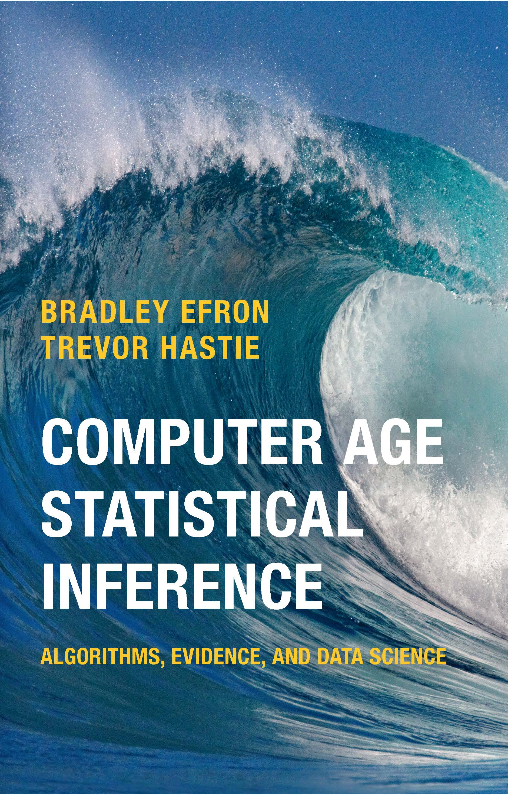
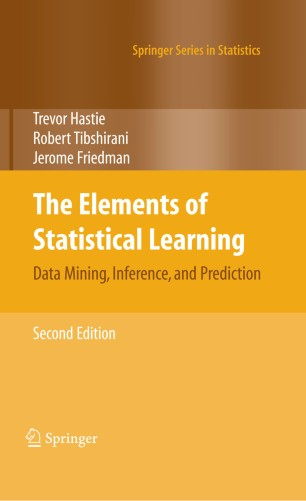

MA8701 Advanced methods in statistical inference and learning
P1W1: Introduction
Course homepage: https://wiki.math.ntnu.no/ma8701/2025v/start
Course philosophy
“Important new algorithms often arise outside the world of professional statisticians: neural nets, support vector machines, and boosting are three famous examples. None of this is surprising. New sources of data, satellite imagery for example, or medical microarrays, inspire novel methodology from the observing scientists. The early literature tends toward the enthusiastic, with claims of enormous applicability and power.”
“In the second phase, statisticians try to locate the new metholodogy within the framework of statistical theory. In other words, they carry out the statistical inference part of the cycle, placing the new methodology within the known Bayesian and frequentist limits of performance This is a healthy chain of events, good both for the hybrid vigor of the statistics profession and for the further progress of algorithmic technology.”
Efron and Hastie (2016) (page 10).
This course focus on this second phase - so it is of importance that you have heard about (and maybe used) the methods we dive into - in other courses or by self study!
Learning
Learning outcome
1. Knowledge
- Understand and explain the central theoretical aspects in statistical inference and learning.
- Understand and explain how to use methods from statistical inference and learning to perform a sound data analysis.
- Be able to evaluate strengths and weaknesses for the methods and choose between different methods in a given data analysis situation.
2. Skills
Be able to analyse a dataset using methods from statistical inference and learning in practice (using R or Python), and give a good presentation and discussion of the choices done and the results found.
3. Competence
- The students will be able to participate in scientific discussions, and read research presented in statistical journals.
- They will be able to participate in applied projects, and analyse data using methods from statistical inference and learning.
Course topics
The starting point is that we cover important parts of
The Elements of Statistical Learning: Data Mining, Inference, and Prediction, Second Edition (Springer Series in Statistics, 2009) by Trevor Hastie, Robert Tibshirani, and Jerome Friedman.
but, since the book is from 2009 (2nd edition, 12th corrected printing from 2017) this means that for many topic we need (to be up to date) additional selected material in the form of book chapters and research articles.

Download book at https://hastie.su.domains/ElemStatLearn/download.html (this is 12th corrected printing) or sign in at NTNU vpn at Springer (but I am not sure if this is an earlier print without the version 12 corrections).
Part 1: Core concepts [3 weeks]
Sort out assumed background knowledge, and learn something new
- Repetition of core concepts (regression and classification)
- Statistical decision theoretic framework (partly new) ESL 2.4
- Model selection and model assessment - including bias-variance trade-off (mostly new) ESL 7
- Handbook of Missing Data Methodology (parts of Chapter 12) and Flexible Imputation of Missing Data (parts of Chapters 1-4) (all new)
Part 2: Shrinkage and regularization [3 weeks]
or “Regularized linear and generalized linear models”, with focus on the ridge and lasso regression (in detail).
- ESL 3.2.3,3.4, 3.8, 4.4.4.
- Hastie, Tibshirani, Wainwright (HTW): “Statistical Learning with Sparsity: The Lasso and Generalizations”. Selected sections from Chapters 1,2,3,4,6.
- Selective inference (articles)
Data analysis project for methods from Part 2.
Part 3: Ensembles [4 weeks]
- trees, bagging and random forests
- Adaboost, gradient boosting, xgboost
- general ensembles (including super learner)
- hyper-parameter tuning
- statistical inference
Selected Chapters in ESL (8.7, 8.8, 9.2, parts of 10, 15, 16) and several articles.
Part 4: XAI [2 weeks]
Interpretable Machine Learning: A Guide for Making Black Box Models Explainable, Molnar (2019), with the following topics:
- LIME,
- partial dependence plots,
- Shapley values,
- counterfactuals.
(Maybe also a guest lecture for new research.)
Part 5: Closing [2 weeks]
- Article presentations
- Course closing
Some observations about the course
- Mainly a frequentist course, but some of the concepts and methods have a Bayesian version that might give insight into why and how the methods work, then Bayesian methods will be used.
- Focus is on regression and classification, and unsupervised learning is not a part of the course.
- The required previous knowledge is listed because this is a PhD-course designed for statistics students. The background make the students go past an overview level of understanding of the course parts (move from algorithmic to deep understanding).
“Required” previous knowledge
- TMA4267 Linear statistical models (needed theory on multiple linear regression)
- TMA4295 Statistical inference (estimators, CIs, tests in general, maximum likelihood theory)
- TMA4300 Computer intensive statistical methods (mainly Bayesian thinking and bootstrapping CIs)
- TMA4315 Generalized linear models (GLM setup, logistic regression - theory and algos)
- TMA4268 Statistical learning (background on decision theory, bias-variance trade-off, regularization, trees and ensembles, total understanding of prediction problems in general)
- Good understanding and experience with R, or with Python, for statistical data analysis.
- Knowledge of markdown for writing reports and presentations (Rmarkdown/Quarto, Jupyther).
- Skills in group work - possibly using git or other collaborative tools.
Course elements
Course wiki at https://wiki.math.ntnu.no/ma8701/2025v/start
The learning material is also available at https://github.com/mettelang/MA8701V2025.
Literature to read before class
Lectures with integrated group work (one or two each week)
Problem sets to work on after the lecture
Office hours
Compulsory group work
Final individual oral exam in May
Class activity
Aim: get to know each other - to improve on subsequent group work!
Code
while (at least one student not presented)
lecturer give two alternatives, you choose one.
lecturer choose a few students to present their view
together with giving their name and study programme
(and say if they are looking for group members)- Dog person or cat person?
- When performing logistic regression - do you then say you do statistical learning or machine learning?
- I will show you the result of a descriptive analysis: table summary or graphical display?
- Learning something new: read a book or watch a video?
- Analysing data: R or python?
- Analysing data: report p-values and or confidence intervals
- In class: taking notes or not?
- Before class: not time to look at material vs study specified material
- Use camel case or snake case for programming?
Reference links
Camel_case camel: writing compound words such that each word in the middle of the phrase begins with a capital letter, with no intervening spaces or punctuation. “camelCase” or “CamelCase”.
Snake_case snake: writing compound words where the elements are separated with one underscore character (_) and no spaces, with each element’s initial letter usually lower cased within the compound and the first letter either upper- or lower case as in “foo_bar”
Bibliography
Efron, Bradley, and Trevor Hastie. 2016. Computer Age Statistical Inference - Algorithms, Evidence, and Data Science. Cambridge University Press. https://hastie.su.domains/CASI/.
Hastie, Trevor, Robert Tibshirani, and Jerome Friedman. 2009. The Elements of Statistical Learning: Data Mining, Inference, and Prediction. Vol. 2. Springer series in statistics New York. hastie.su.domains/ElemStatLearn.
Molnar, Christoph. 2019. Interpretable Machine Learning: A Guide for Making Black Box Models Explainable.